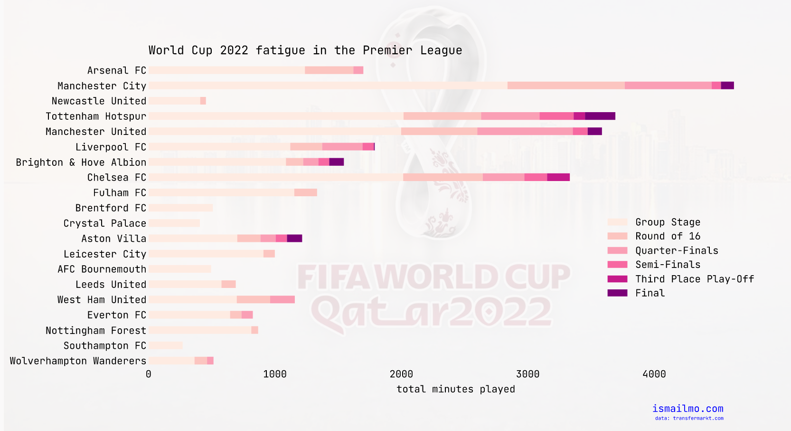
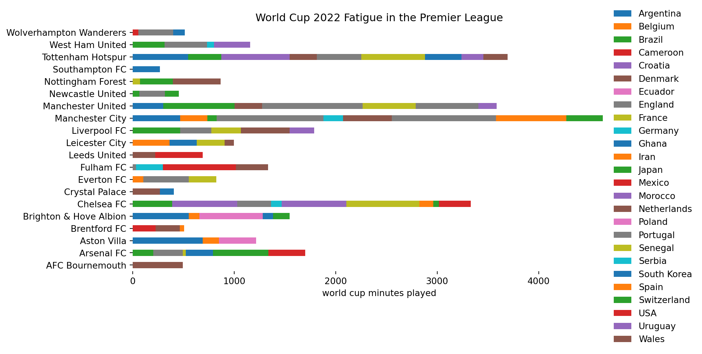
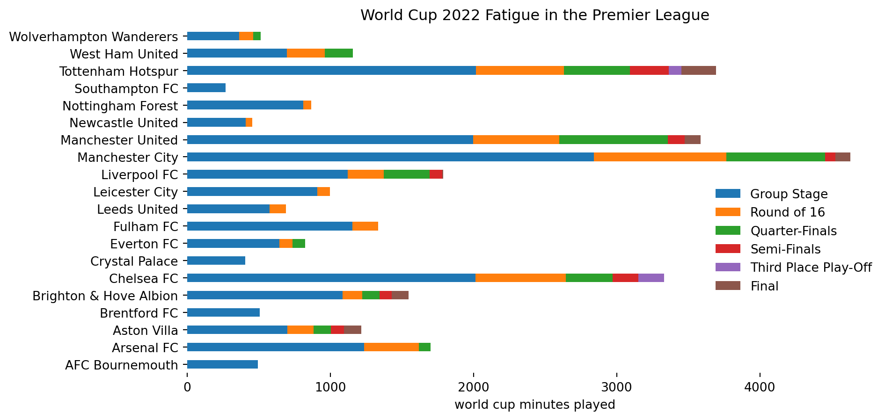

Assessing the impact of the World Cup on the Premier League
python
pandas
matplotlib
data-viz
football
world cup
Published
December 27, 2022
The 2022 World Cup in Qatar was the first to be held during the winter months in the Premier League to avoid the intense heat of the Middle Eastern summer, so the Premier League season was put on hold accomodate for this. With only a week break between the end of the World Cup and the restart of the Premier League, it’s clear that some players and clubs will be impacted more than others, depending on how many games they played during the international tournament.
This post aims to explore the impact of the World Cup on the Premier League.

The final product
1 Data Sources
In a previous post exploring the strange fact about the 2019 Champions League Final, transfermarkt was used as the data source by scraping webpages for players and teams. The same data source and libraries will be used here, but some changes are necessary to ensure we get the right level of granularity to ensure we canextract insights at the right level.
You can check out the transfermarkt scraping code here.
2 Extracting World Cup data
The key data for this analysis lies within transfermarkt’s pages for the games played during the World Cup. Our previous scraping functionality was designed to only extract player availability so we’ll need to tweak some of the scraping code so we can get the minutes played for each game.
Once we have a list of all matches played by a player, we need to extract the minutes played. Unfortunately the data for each player is on a seperate page, so to aggregate data for a club, we have to make a request for each one.
Scraping world cup minutes data
from datetime import datetimeimport pandas as pddef get_world_cup_minutes( team_url:str, world_cup_start = datetime(2022,11,20), world_cup_end = datetime(2022,12,18) )-> pd.DataFrame: team_players = teams.get_players(team_url)# build url of player to scrape data from team_player_urls = {player:"https://www.transfermarkt.com"+ url for player,url in team_players.items()}# grab all player's matches team_minutes_played = []for player,url in team_player_urls.items():print("grabbing data for: "+ player) match_data = players.get_match_data(url,world_cup_year)# possibility of player not playing any games if match_data isNone:continue min_played = players.get_minutes_played(match_data)# add player_name column so we can identify rows when we concatenate min_played['player_name'] = player team_minutes_played.append(min_played) all_minutes_played= pd.concat(team_minutes_played) world_cup_minutes = all_minutes_played.loc[all_minutes_played['Date'].between(world_cup_start, world_cup_end)]return world_cup_minutes
We can now use this function to extract data for each Premier league team:
# for some reason transfermarkt lists world cup on 2021 pageworld_cup_year="2021"# get 2022 premier league clubsprem_clubs_22 = leagues.get_prem_club_list(season="2022")prem_world_cup_minutes = {}for club,url in prem_clubs_22.items(): team_minutes = get_world_cup_minutes(url) prem_world_cup_minutes[club] = team_minutes# add club name so we can identify rows by club when we concatenate rows team_minutes["club"] = clubprem_world_cup_minutes_df = pd.concat(prem_world_cup_minutes.values())
Finally we have our complete dataset that we can play around with!
prem_world_cup_minutes_df.sample(5)
Date
Matchday
Home team.1
Away team.1
Result
min_played
subbed_on
subbed_off
player_name
club
0
2022-11-21
Group B
England
Iran
6:2
0
Groin Surgery
Groin Surgery
Emile Smith Rowe
Arsenal FC
3
2022-12-06
Round of 16
Morocco
Spain
3:0 on pens
0
on the bench
on the bench
David Raya
Brentford FC
5
2022-12-14
Semi-Finals
France
Morocco
2:0
0
Not in squad
Not in squad
Lucas Digne
Aston Villa
0
2022-11-21
Group B
England
Iran
6:2
0
on the bench
on the bench
Aaron Ramsdale
Arsenal FC
2
2022-11-29
Group B
Wales
England
0:3
77
NaN
77'
Daniel James
Fulham FC
3 Data processing
Now that the data is normalised, we can run some sense checks to ensure the data is what we expect.
Lucas Digne 7
Mateo Kovacic 7
Raphaël Varane 7
N'Golo Kanté 7
Hakim Ziyech 7
..
Thomas Partey 3
Tariq Lamptey 3
Wout Faes 3
Armel Bella-Kotchap 3
Philip Billing 3
Name: player_name, Length: 150, dtype: int64
This passes the eye test: Digne (France) and Kovacic (Croatia) both played all games in the World Cup since they got to the final and third place playoff, and unfortunately for Billing (Denmark) and Bella-Kotchap (Germany), their teams were knocked out at the group stage after playing only 3 games.
3.1 Adding country name
This data doesn’t currently contain the name of the country, and although we can get this by scraping more webpages, it isn’t ideal since we have to make more requests which is slow and writing more code to scrape the responses won’t be fun or productive.
We do have the data for each game played by the player, so a hacky way to get the team name is to calculate the mode of the teams in the subset of data for that player. I.e. for Lucas Digne (France), here are all the games played by him:
The aim of this visualisation was to assess the impact on various premier league teams, so we can start by aggregating by club and just adding up all the minutes.
This plot seems a bit bare, and it misses context around the distribution of the minutes amongst the squad. For example, Bournemouth seems to have comparable minutes played with Brentford, but Bournemouth were represented by just one player (Phillip Billing of Denmark) vs Brentford who had 4 different players at the World Cup. You could argue the impact to Brentford is greater since Bournemouth can just rest Billing for a game or two, whereas resting 5 players is a taller order for Brentford.
4.1 Grouping by country

This seems to be committing the sin of way too much data in one plot, there just aren’t enough (significantly) different enough colours to differentiate between the countries, and even if we could - it’d be too much to take in for a visualisation.
4.2 Grouping by tournament progression
A more meaningful and accessible visualisation is to group together contries that made it to the same stages of the tournament. The progression through the world cup rounds indicates how much rest the players have had and also provides reasons behind the number of minutes: progressing to later rounds is likely to be the cause behind a higher number of minutes played.

4.3 Finishing touches
Since we are exploring the impact of fatigue from the world cup, it would make sense to order the y axis (premier league teams) by league position since this is likely to be affected following the world cup.
Adding premier league standings
from fuzzywuzzy import processprem_standings = pd.read_html("https://www.bbc.co.uk/sport/football/tables")[0]prem_standings = prem_standings.iloc[:-1, [0,2]].rename({'Unnamed: 0':'prem_position'}, axis=1).set_index('Team')# taken from https://stackoverflow.com/a/56315491def fuzzy_merge(df_1, df_2, key1, key2, threshold=90, limit=2):""" :param df_1: the left table to join :param df_2: the right table to join :param key1: key column of the left table :param key2: key column of the right table :param threshold: how close the matches should be to return a match, based on Levenshtein distance :param limit: the amount of matches that will get returned, these are sorted high to low :return: dataframe with boths keys and matches """ s = df_2[key2].tolist() m = df_1[key1].apply(lambda x: process.extract(x, s, limit=limit)) df_1['matches'] = m m2 = df_1['matches'].apply(lambda x: ', '.join([i[0] for i in x if i[1] >= threshold])) df_1['matches'] = m2return df_1df = df.reset_index()prem_standings = prem_standings.reset_index()merged_standings = fuzzy_merge(df, prem_standings, key1='club', key2='Team', threshold=65, limit=1)merged_standings.loc[merged_standings['club']=="Manchester United", 'matches'] ='Man Utd'merged_standings = merged_standings.merge(prem_standings, how='left', left_on='matches', right_on='Team').drop(['matches', 'Team'], axis=1)merged_standings['prem_position'] = pd.to_numeric(merged_standings['prem_position'])merged_standings.sort_values('prem_position', inplace=True, ascending=False)df = merged_standings.drop("prem_position", axis=1).set_index("club")
We can change the colour scheme so it’s more accessible (see colorbrew.org) and somewhat matches the world cup theme, change the fonts, add some spacing and we end up with our final plot: